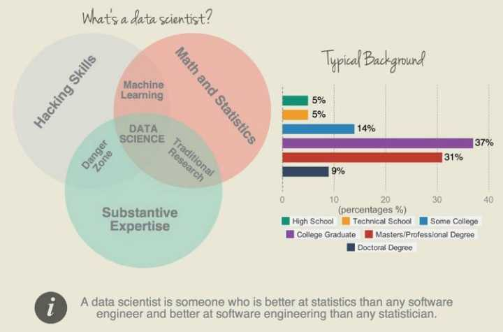
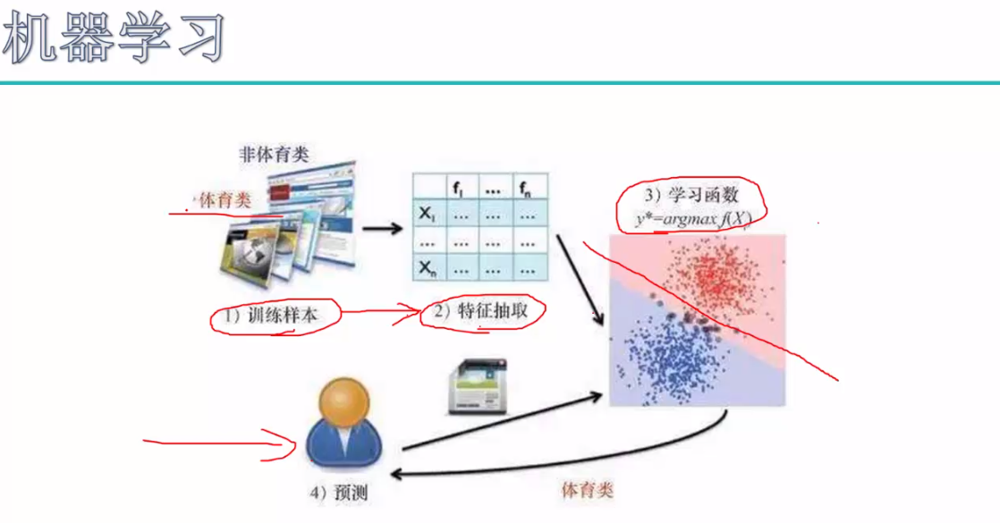
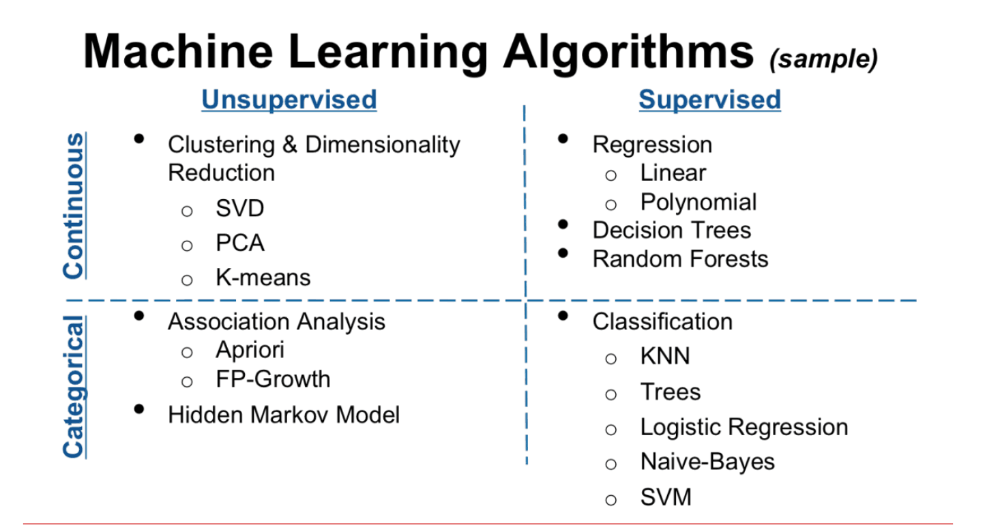

介绍
人类的学习按逻辑顺序可分为三个阶段：输入，整合，输出。人类的学习是一个人根据过往的经验，对一类问题形成某种认识或总结出一定的规律，然后利用这些知识来对新的问题下判断的过程。人类学习能力强，但记性差，反应慢，还容易坏。计算机虽呆，但容量大，计算快，还稳定.这就引出我们今天的主题了，机器学习。我们对机器学习下这样一个定义了：机器学习是指用某些算法指导计算机利用已知数据得出适当的模型，并利用此模型对新的情境给出判断的过程。机器学习的思想并不复杂，它仅仅是对人类生活中学习过程的一个模拟。这整个过程中，最关键的是数据. 
开始
机器学习根据所处理数据种类的不同，可以分为有监督学习，无监督学习，半监督学习和强化学习等几种类型。所谓监督学习，就是说数据样本会告诉计算机在该情形下的正确输出结果，希望计算机能够在面对没有见过的输入样本时也给出靠谱的输出结果，从而达到预测未知的目的。根据输出结果是离散值还是连续值，监督学习可以分为分类问题和回归问题两大类。回归通常用来预测一个值，如预测房价、未来的天气情况等等，回归是对真实值（Real）的一种逼近预测。分类(classification)就是将实例数据划分到合适的分类中。分类问题是用于将事物打上一个标签，通常结果为离散值。分类并没有逼近的概念，最终正确结果只有一个，错误的就是错误的，不会有相近的概念。他们在文字、语音、图像识别，垃圾邮件分类与拦截，网页检索，股票预测等方面有着广泛应用。无监督学习，是指数据样本中没有给出正确的目标变量,希望推断出数据的一些内在结构，从数据中挖掘出目标变量，常见的例子有聚类，关联规则挖掘，离群点检测等等。

AI与机器学习,深度学习
AI即人工智能是一个很大的学科，主要含已下内容：计算机视觉，自然语言处理，认知和推理，机器人，博弈和伦理，机器学习。其中，深度学习本来是机器学习的子集，由于发展的足够庞大，已经独立成一个单独的主题了。这一部分内容又和传统的数据挖掘有着千丝万缕的关系，下面列出相关关系：
- 模式识别=机器学习
- 数据挖掘=机器学习+数据库
- 统计学习=机器学习
- 计算机视觉=图像处理+机器学习
- 语音识别=语音处理+机器学习
- 自然语言处理=文本处理+机器学习
机器学习算法
-
监督学习包含算法：k-近邻算法、决策树、支持向量机、朴素贝叶斯算法、Logistic回归,线性回归、局部加权线性回归、Ridge回归、Lasso最小回归系数估计,随机森林(提高分类准确度),Adaboost(提高分类准确度)等。
-
非监督学习包含算法：K-均值,最大期望算法(EM)、DBSCAN,SVD(奇异值分解),PCA(主成因分析),Apriori算法,FP-Growth,隐马克夫模型(HMM)等。
(分类,回归,聚类,降维,关联分析) 
机器学习框架以及相关类库
- scikit-learn
- pybrain
- milk
- orange
- bigml
- pyml
- mllib （spark，支持java，scala，Python）
- weka (java)
- mahout (java)
深度学习主要算法以及相关类库
主要算法:CNN(卷积神经网络)、RNN(循环神经网络)、DNN(深度神经网络)
- MXNet
- Caffe
- CNTK
- Neon
- TensorFlow
- Torch
- Theano
- Keras
上述大部分深度学习类库都支持GPU加速,(Ubuntu16.04 + GTX 1080 TI + CUDA（目前9.0版，兼容性并不好)+ cuDNN（cuDNN是为DNN设计的CPU加速库）+CNMeM(合理分配显存)=深度学习标配环境